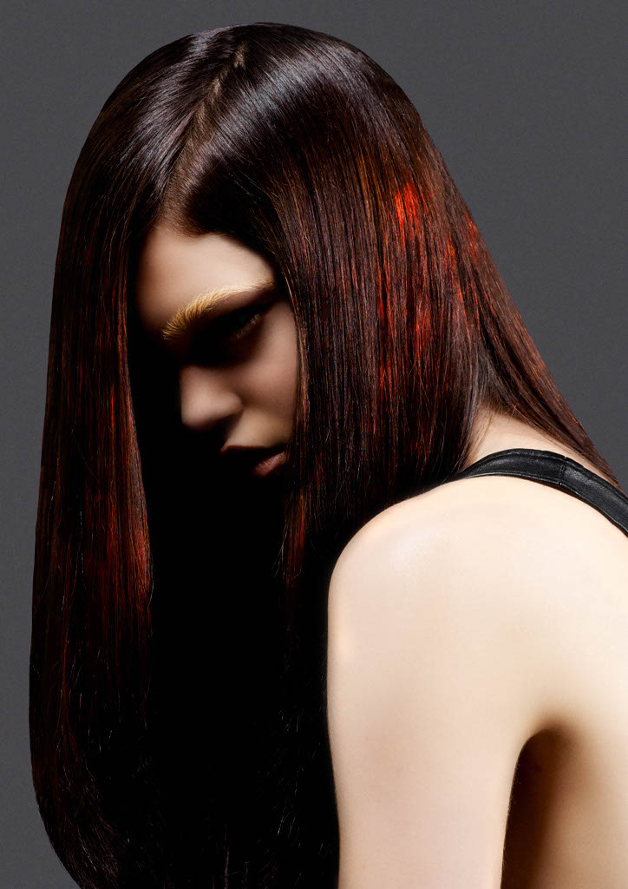
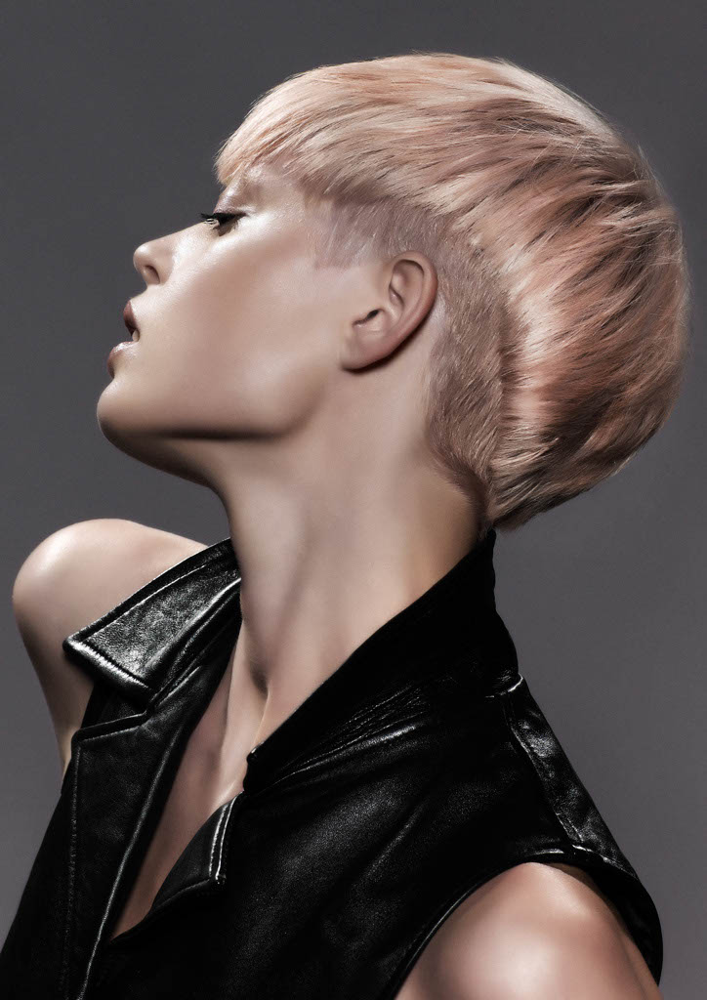
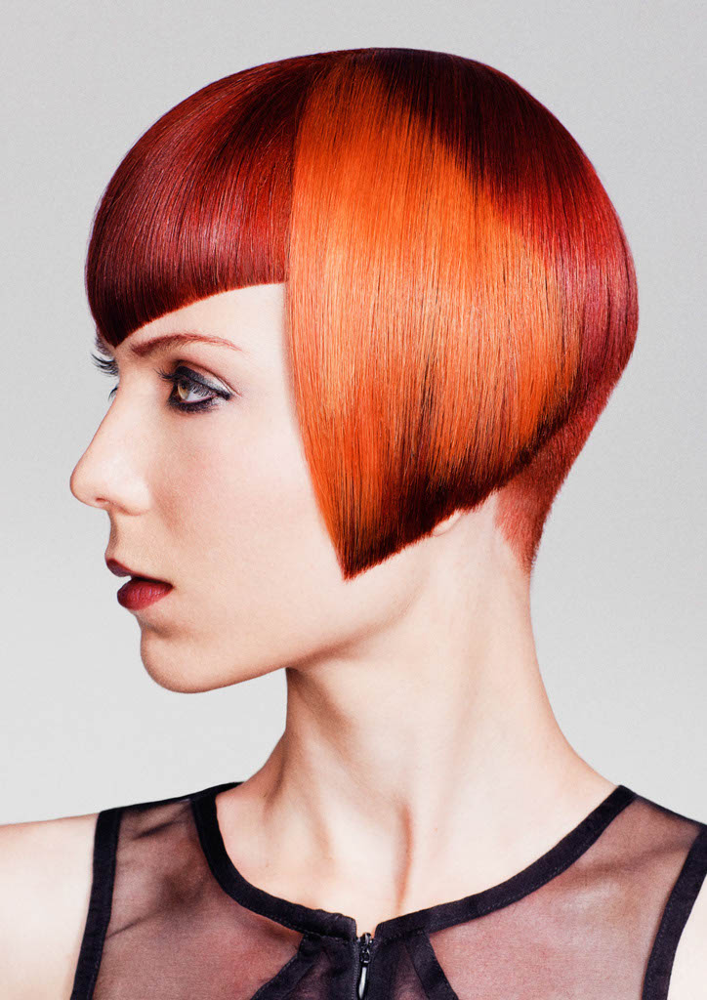
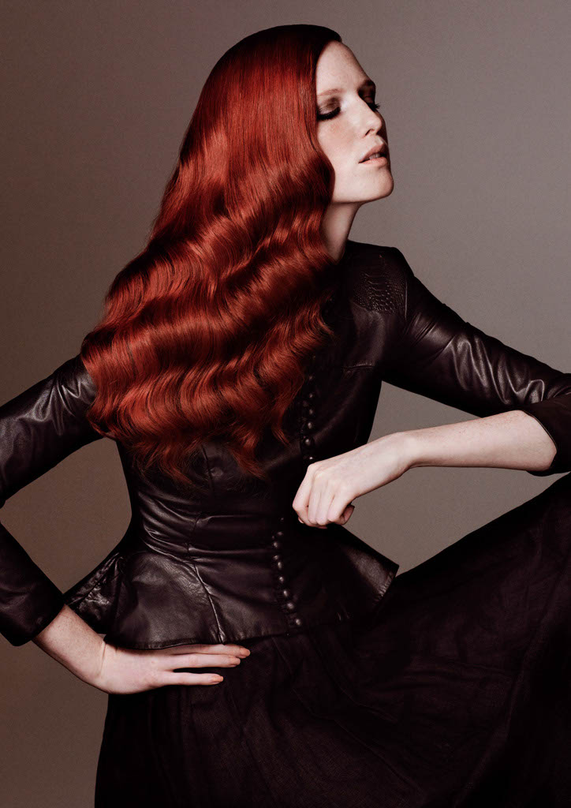
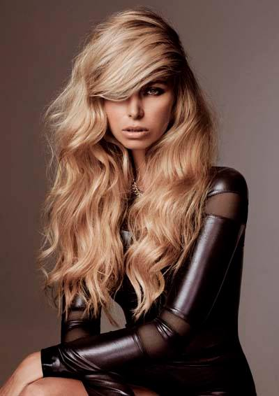
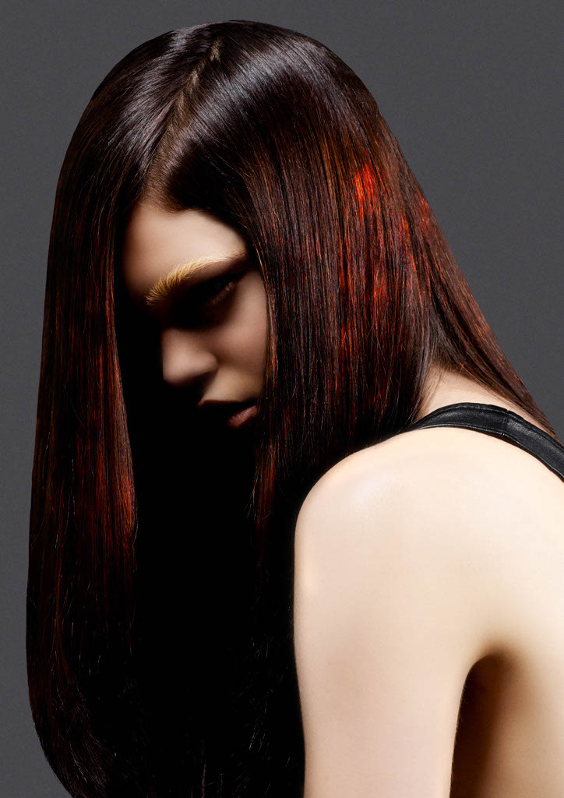
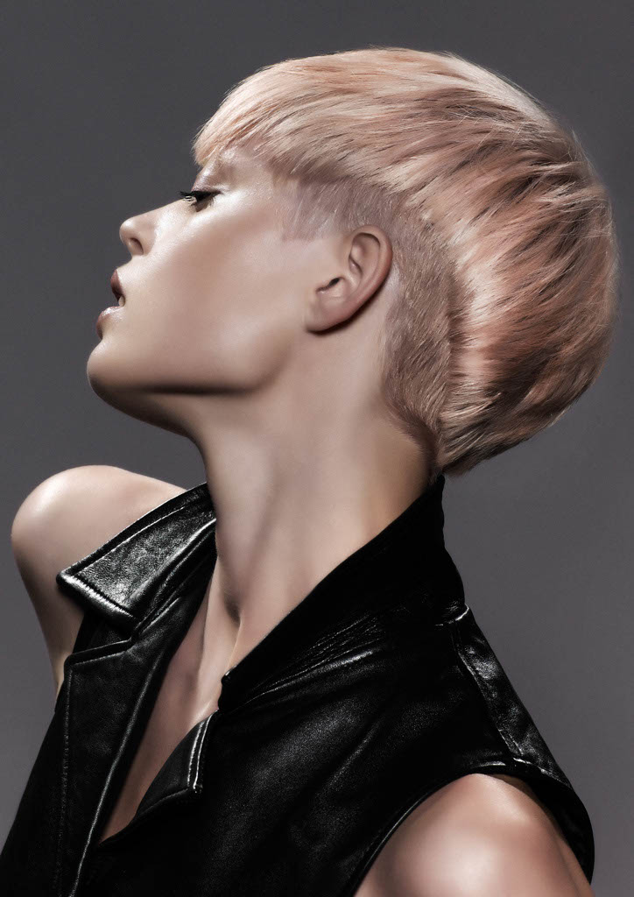
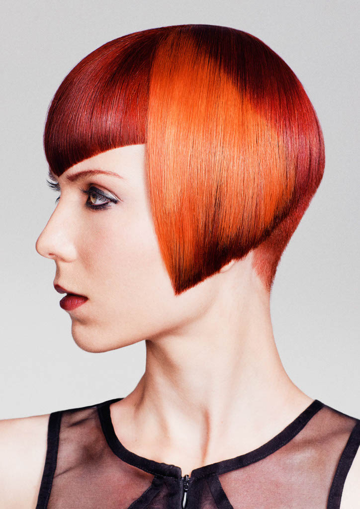
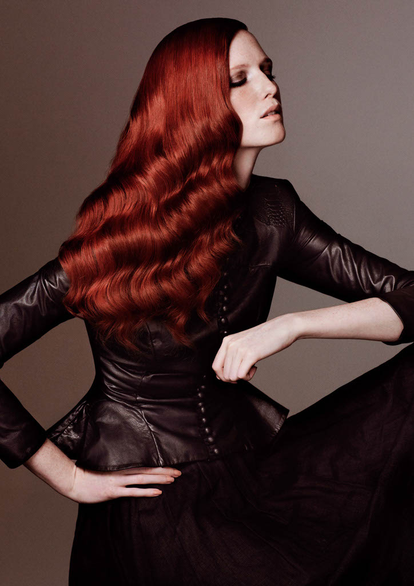
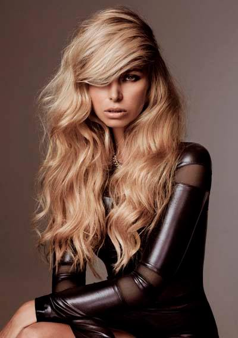
Hair colour is like a beautiful painting, reflecting light and shade with lots of dimension. It should be seamless and continually flow through the hair with perfect harmony. For every look, I work with the complexion, features, eye colour and natural texture accentuating the natural beauty. Great colour should always evolve with the client.Vincent Nobile.
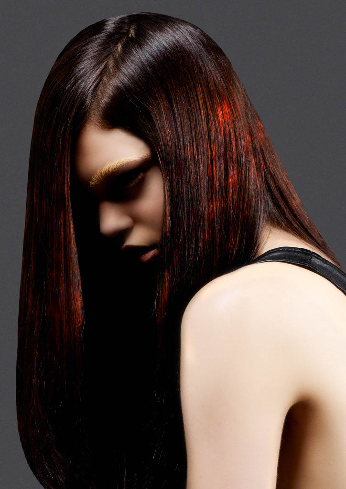
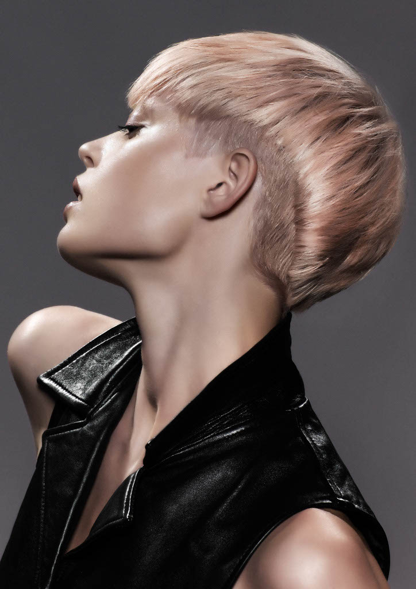
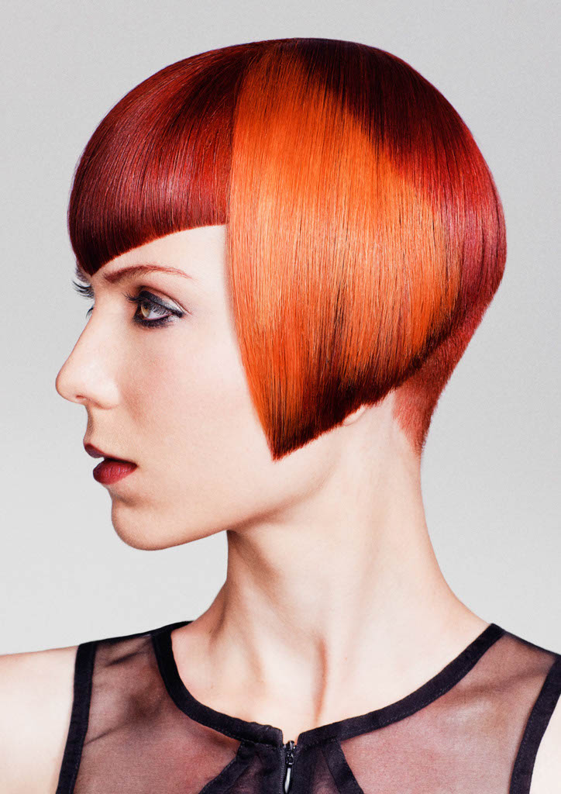
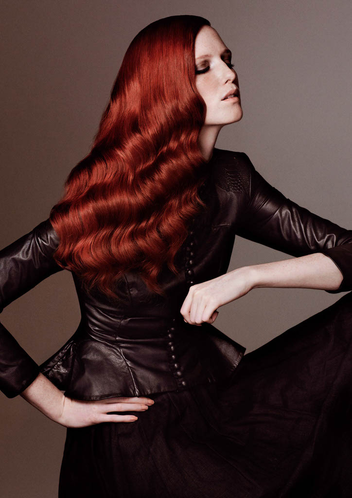
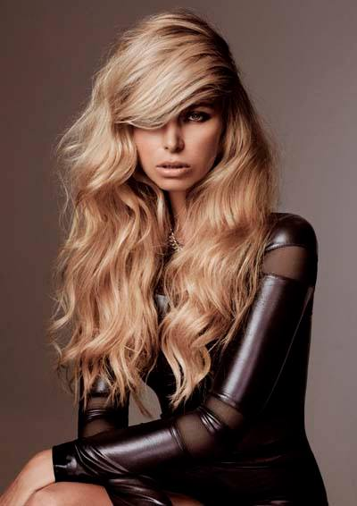
Vincent is one of Australia’s top Educators in his field. Vincent is available for group and one on one training. He specialises in teaching:
For more information contact:info@vincentnobile.com
Take advantage of Vincent’s many years of experience and get his help in buiding you business and career. Vincent is availalbe for Consulting and can help you with: